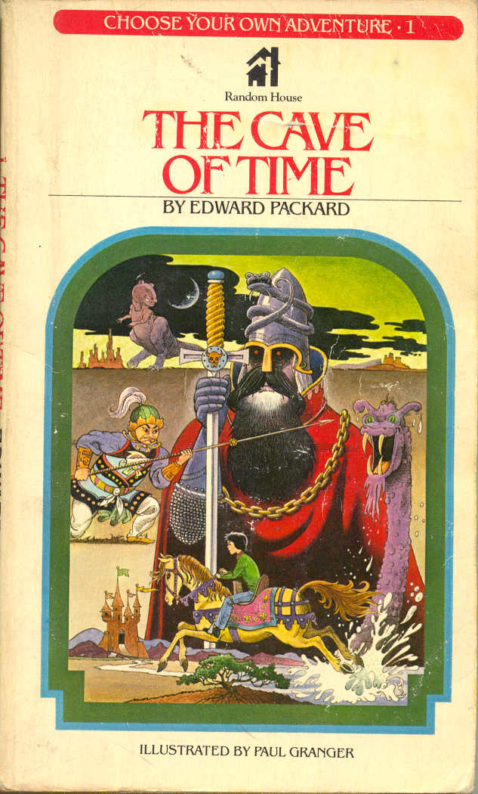
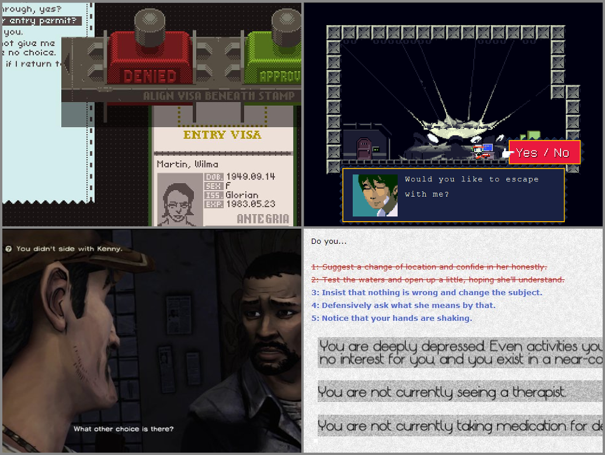
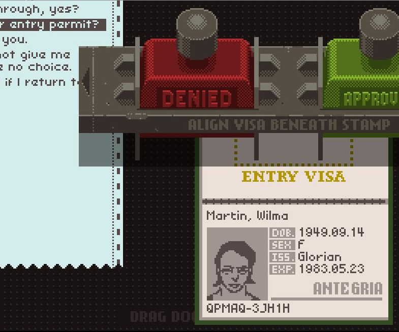
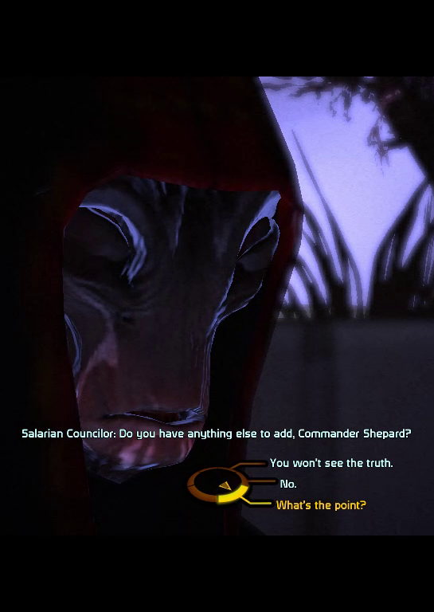
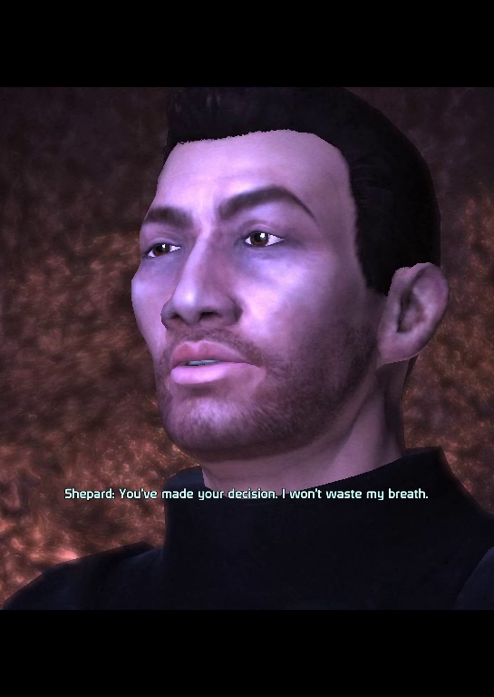
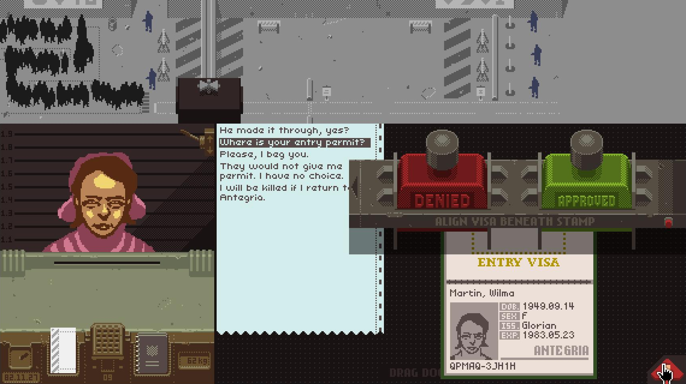

A Formal Approach to Narrative Choices
Peter Mawhorter and Arnav Jhala
Wednesday May 9th, 2018


“How does this choice impact the player experience?”

Achieving the Illusion of Agency. Matthew W. Fendt, Brent Harrison, Stephen G. Ware, Rogelio Cardona-Rivera, and David L. Roberts. Interactive Storytelling, 2012.
1. What are the player’s goals?
Diegetic
Extra-diegetic
 

1. What are the player’s goals?
2. What outcomes are suggested?
| Approve | Deny |
|---|---|
| [likely] ‘Mistake’ is discovered. | [likely] No mistake possible. |
| [unknown] Refugee is saved. | [unknown] Refugee will be killed. |
| [unknown] Criminal gains entry. | [unknown] Criminal is thwarted. |
| [unlikely] Earn a credit. | [likely] Earn a credit. |
3. What impacts do the outcomes have on player goals?
3. What impacts do the outcomes have on player goals?
| Goal | Approve | Deny |
|---|---|---|
| <feed your family> | enables threatens hinders |
enables advances |
| <avoid penalty> | enables threatens hinders |
enables advances |
| <treat ethically> | enables | enables threatens |
| <thwart criminals> | threatens | enables |
3. What impacts do the outcomes have on player goals?
| Goal | Approve | Deny |
|---|---|---|
| <feed your family> | enables threatens hinders |
enables advances |
| <avoid penalty> | enables threatens hinders |
enables advances |
| <treat ethically> | enables advances |
threatens hinders |
| <thwart criminals> | none | none |
↖ If we trust the applicant…